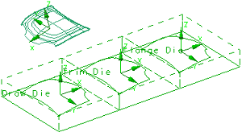

打开部件并更改图层设置
-
打开 mnf14_die_form_task。
在创建成形工序之前，此部件中必须包含工艺路线和冲压定向。

-
在部件导航器中，注意部件中已创建的工艺路线、冲压操作以及冲模定向特征。
-
选择格式→图层设置。
-
在图层组中，确保已选中类别显示复选框。
-
选择 FORM_TASK 旁的类别复选框以将该图层设为可选。

注释：片体在图形窗口中透明显示，以便您可以看到曲线。
FORM_TASK 类别图层中包含您将用于创建成形工序特征的曲线。
-
点击关闭。